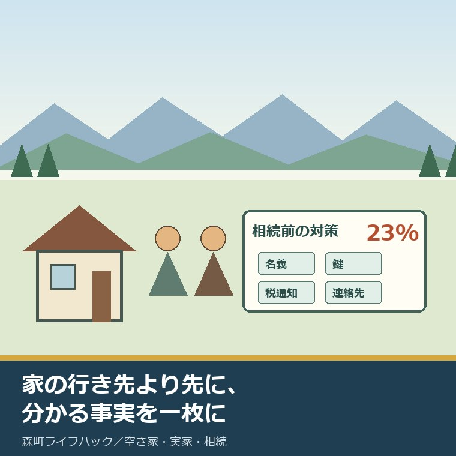
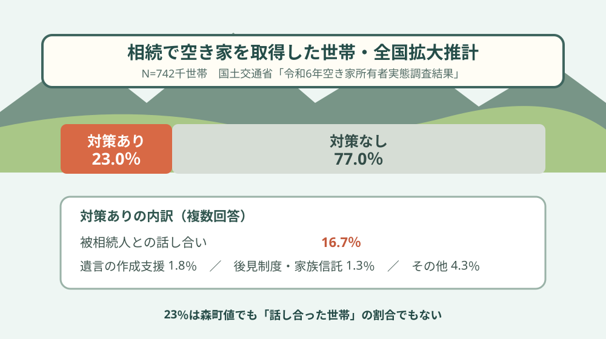
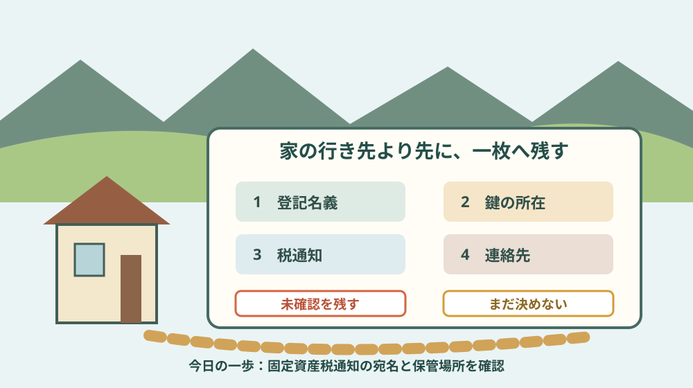

空き家の相続前準備｜備えた世帯は23％

この記事の要点
Q. 空き家の相続前準備は、何から始めますか。
A. 売却や解体を決める前に、分かる事実を一枚にします。登記名義、固定資産税通知の保管場所、鍵、管理の連絡先を親子で確認し、分からない欄は「未確認」と残します。家の行き先を今日決めなくても、次に誰が何を確かめるかは決められます。
森町の実家を将来引き継ぐかもしれない。けれど、親へ空き家や相続の話を出すと、家を売れと言っているように聞こえそうで切り出せない。そんな家族を想定して書きます。
親の側も、家を守り、税を払い、草を刈り、修繕し、地域との関係を保ってきました。その努力を飛ばして「後で困るから決めて」と迫れば、話が閉じるのは不思議ではありません。
国土交通省が2025年8月に公表した「令和6年空き家所有者実態調査結果」には、相続前に対策を講じた世帯が23.0％という数字があります。
ただし、この23％を「相続の準備を全部終えた世帯」や「親子で話した世帯」と読んではいけません。何を数えた数字なのかを先に分けます。
23％は、相続で空き家を取得した世帯の全国推計
調査対象は、2023年住宅・土地統計調査で、現住居以外に居住世帯のない住宅を所有していると答えた世帯から無作為に抽出されています。
調査の基準日は2023年10月1日です。一部事項は2024年12月1日で、調査票は2024年11月下旬から12月に配布・回収されました。
13,268件へ調査票を配り、有効回答は6,294件、総合回収率は47.4％です。公表値は回答をそのまま数えた実数ではなく、全国の世帯数へ拡大した推計を含みます。
23.0％の集計対象は、現在の空き家を「相続」で取得した世帯です。図表のNは742千世帯ですが、742千件の回答が集まった意味ではありません。
国交省の表現は「相続前に対策を講じた」です。本記事の題名にある「備えた」は検索時に分かりやすくする短い言い換えで、準備完了を意味しません。
| 回答区分 | 全国推計の割合 | 読み方 |
|---|---|---|
| 相続前に対策を講じた | 23.0％ | 下の対策1〜4のいずれか |
| 特に対策は講じていない | 77.0％ | 対策1〜4を選んでいない |
| 被相続人との話し合い | 16.7％ | 複数回答の内訳 |
| 遺言の作成支援 | 1.8％ | 複数回答の内訳 |
| 後見制度や家族信託の活用 | 1.3％ | 複数回答の内訳 |
| その他の対策 | 4.3％ | 複数回答の内訳 |
内訳は複数回答なので、16.7、1.8、1.3、4.3を足すと24.1になります。同じ世帯が複数の対策を選べるため、重複を除いた対策ありは23.0％です。
推計世帯数は千世帯単位で丸められています。図表は不詳を除いて作られ、比率計算に使った厳密な有効分母は示されていません。23％を掛けて実世帯数を断定しない方が安全です。

意外な点は、話し合いだけなら16.7％だということ
調査票は「相続前に、この空き家の相続後の利用について何か対策を講じていましたか」と尋ねています。一般的な終活や相続全体ではなく、この空き家の相続後の利用が対象です。
選択肢は、被相続人との話し合い、遺言の作成支援、後見制度や家族信託の活用、その他、特に対策なしの五つです。
23％という見出しより厳しく見たい数字は、被相続人との話し合いが16.7％にとどまることです。
それでも、話していない77％の家族が無関心だったとは言えません。病気、介護、きょうだい関係、遠距離、家に住み続ける希望など、話題にできない事情をこの調査は測っていません。
対策ありの世帯で、その後の空き家問題が必ず軽くなったとも断定できません。対策の質、話し合った時期、結論、実行結果は23％だけでは分かりません。
数字を家族への圧力に使うのではなく、話を小さく始める理由として使います。
家の行き先より先に、分かる事実を集める
最初から「この家をどうする」と聞くと、残す、売る、貸す、壊すという大きな選択になります。親にも子にも、答える負担が重すぎます。
先に聞くのは、登記上の名義を知っているか、固定資産税の通知がどこへ届くか、鍵を誰が持つか、修繕を誰へ頼んできたかです。
答えが出なければ「未確認」と書きます。分からないことを責めず、探す担当と期限だけ置きます。
片付けから始める場合も、権利書、納税通知、契約書、通帳、建物図面を先に避難させます。処分前の分け方は、実家の片付けで「残す理由」を分ける記事にまとめています。
課税明細に載る土地だけで、親名義の不動産を全部数えたことにはなりません。名寄帳で筆を並べる手順は、森町の実家の土地を名寄帳で確かめる記事を参照してください。
「書類が全部そろうまで話せない」と考えると始まりません。一枚目は不完全でよい。ただし、推測を事実の欄へ入れないことは守ります。
親への最初の質問は、処分ではなく保管場所
会話の入口は「家を売るつもり？」ではなく、「固定資産税の封筒はどこへ置いている？」で十分です。
次に「玄関以外の鍵は誰が持っている？」「雨漏りや浄化槽はどこへ頼んでいる？」と、暮らしの記憶を一つずつ聞きます。
親が話したくない日は止めます。話をしない選択まで記録する必要はありません。次に話せる日を勝手に締切へしないことです。
きょうだいへ共有するときは、親の意向と子の推測を別の欄にします。「父は残したいと言った」と「長男が残すと思う」は同じ情報ではありません。
戸籍や証明書を親の代わりに取れるかは書類ごとに条件が違います。委任状と代理取得の入口は、親の証明書を代理で取る前の確認で整理しています。
全国の法務局から所有不動産記録証明書を取得できる制度の開始日は2026年2月2日です。使い方と限界は、全国の所有不動産を一覧にする記事で確認できます。
森町で一枚にする五つの欄
一つ目は、土地と建物です。所在地、地番、家屋番号、登記名義、共有者、未登記建物、農地、山林を書きます。
二つ目は、税と支払いです。固定資産税通知の宛先、口座、火災保険、電気、水道、浄化槽、草刈り、修繕費を並べます。
三つ目は、管理です。鍵の保管者、月ごとの訪問者、換気、通水、郵便、近隣連絡、台風後の確認担当を記します。
四つ目は、家族です。親が話した内容、まだ話していないこと、連絡を受ける人、現地へ動ける人、書類を扱う人を分けます。
五つ目は、保留です。売却、賃貸、解体、家財処分、遺産分割など、まだ決めない事項を堂々と書きます。
保留欄は空白ではありません。判断材料が足りないため、今は決めないという家族の合意です。
相続人代表者の届出と相続登記を混ぜない
森町の固定資産税関係の申請書様式には、所有者が亡くなった場合の相続人代表者指定届が掲載されています。
同じページには、未登記家屋の所有者変更届や共有代表者変更届もあります。名称が似ていても、対象と効果は同じではありません。
相続人代表者指定届は、固定資産税の納税通知などを受ける代表者の届出です。不動産の所有権を移す相続登記の完了とは別です。
未登記家屋の町への届出も、登記されている土地・建物の名義変更をまとめて終える書類ではありません。
誰が税の通知を受け、誰が登記を進め、誰が管理費を払うかを一人に押し込めない。役割を分けて書くと、後継の負担が見えます。
相続前に決めても、空き家の維持は自動で終わらない
森町空き家・空き地バンクは、申込書、同意書、チェックリストなどを使って物件情報を登録する仕組みです。
町は仲介、契約、物件管理を行わないと明記しています。登録を考える前にも、所有者、境界、設備、家財、維持費の確認が残ります。
土地と建物の所有者が異なる場合は、土地所有者の同意書が必要です。相続前の一枚で権利関係を分けておく理由がここにあります。
第2期森町空家等対策計画の期間は2023年11月から2032年度末までで、対象は森町全域です。
町が長期計画で見ていても、各世帯の草刈り、移動、通水、修繕、保険料は毎月積み上がります。所有者家族が既に払う時間と維持費を、準備不足の一言で片付けられません。
相続前準備は、その負担を誰かへ押し付ける作業ではありません。現在の負担を見えるようにし、引き継げない部分を早めに相談する作業です。
良い点：売るか残すかを保留したまま動ける
相続前に一枚を作る良い点は、処分の結論がなくても確認を始められることです。
親は家の希望を変えられます。子の仕事、住まい、介護、家族構成も変わります。一度の話し合いを永久の決定にしなくてよい。
名義、鍵、通知先、連絡先の事実は、売る、残す、貸すのどれを選んでも使えます。
未確認欄が増えれば、次に役場、法務局、司法書士、税理士、不動産業者など、どこへ聞くかを選べます。
準備を「決断」ではなく「情報を失わないこと」と捉え直せば、親子の話を小さくできます。
注文したい点：23％では準備の質と家族負担が見えない
その上で調査結果に注文したい点があります。23％だけでは、何回話し、何を決め、どの書類を残し、相続後に実行できたかが見えません。
話し合いをした16.7％の中にも、結論を出した世帯、保留を選んだ世帯、一度話しただけの世帯が含まれ得ます。図表からは分けられません。
親の介護、認知機能、遠距離移動、きょうだい間の役割、草刈りの担い手、年間維持費も、この数字だけでは読めません。
一方で、調査へ回答しなかった世帯の状況も同じとは限りません。回収率47.4％を忘れて、全世帯の心情を説明しないことが要ります。
行政の調査は全国像を示す入口です。一軒の事情へ置き換えるには、家族の記録がもう一段必要です。

対案・結論：今日、税通知の一面を確認する
今日できる小さな一歩は、固定資産税の納税通知書を親と一緒に一通だけ開き、表紙の宛名と保管場所を確認することです。
通知書が見つからなければ、見つからないと一枚へ書きます。その場で家中を探し回り、親を疲れさせる必要はありません。
書く欄は、確認日、通知の宛名、届く住所、保管場所、次に探す人の五つです。課税明細に載る地番は別欄へ写します。
写真を家族へ送る場合は、個人情報や番号が写る範囲を確認し、共有先を限定します。家族の一斉チャットへ原本写真を置くことを標準にしません。
家をどうするかは今日決めない。税の通知を誰が受けているかだけ確かめる。そこからなら始められます。
今日の確認を一行残せば、次の話はゼロからではありません。親が続けて話したくなければ、その日は終わりにします。
家族に残す記録
基本情報は、所在地、地番、家屋番号、登記名義、固定資産税通知の宛名と送付先です。
鍵は、玄関、勝手口、物置、車庫、門、郵便受けごとに本数と保管者を書きます。鍵番号の写真は共有範囲を限定します。
設備は、電気、水道、ガス、浄化槽、井戸、給湯器、火災保険の契約者、連絡先、停止状況を分けます。
管理は、草刈り、換気、通水、郵便回収、近隣連絡、台風後点検の担当、頻度、直近実施日、費用を記します。
家族の意向は、本人が話した言葉、確認日、同席者を書きます。子の予想や希望は別欄に置きます。
判断欄は、決めたこと、未確認、保留、相談先、次の担当、期限の六つに分けます。保留にした理由も一行残します。
大石の視点
ここからは、大石浩之（磐田市／不動産業）としての意見です。体験ストックに、相続前準備によって空き家化を防げた一人称の実例はありません。
不動産の側から見ると、早く査定し、売るか残すかを決めた方が整理しやすいと言いたくなります。けれど、その順番には迷いがあります。
価格の話を先に出すと、親には家の記憶を金額へ変えられたように聞こえることがある。これは今回の実話ではなく、私が記事を書く上で置く慎重な見方です。
私は、まだ決めない自由を家族の段取りに残したい。決めない代わりに、名義、鍵、税通知、連絡先は失わないようにする。この二つは両立します。
森町の実家を支える人は、既に移動、管理、地域連絡、維持費を背負っています。外から正解を押しつけるより、その負担を一枚に載せるところから始めるべきです。
相続前準備は、家を手放す約束ではありません。家族が後で選べるように、事実を残す作業です。
まとめ
国交省調査の23.0％は、相続で空き家を取得した世帯の全国拡大推計で、相続前に何らかの対策を講じた割合です。森町の割合ではありません。
被相続人との話し合いは16.7％です。23％を親子の話し合い率や準備完了率へ読み替えないでください。
森町の家族が先に残すのは、登記名義、税通知、鍵、管理連絡先、現在の維持負担です。相続人代表者指定届と相続登記も分けます。
今日の一歩は、固定資産税の通知書を一通だけ確認し、宛名と保管場所を書くことです。家の行き先は保留でも、次の担当は決められます。
よくある質問
Q1. 空き家の相続前準備は、親が元気なうちに何を決めればよいですか。
A1. 売却や解体まで決める必要はありません。まず登記名義、固定資産税通知の保管場所、鍵の所在、管理の連絡先を親子で確認し、分からない項目を未確認と記録します。
Q2. 国交省調査の23％は、森町で準備した世帯の割合ですか。
A2. 違います。相続で空き家を取得した世帯を対象とする全国の拡大推計です。23.0％は相続前に何らかの対策を講じた割合で、被相続人との話し合いだけの割合は16.7％です。
Q3. 固定資産税の相続人代表者指定届を出せば、相続登記も終わりますか。
A3. 終わりません。相続人代表者指定届は固定資産税の納税通知などを受ける代表者に関する町の様式です。不動産の名義を変える相続登記とは別に確認してください。
制度、様式、窓口、税務、登記の扱いは変わる場合があります。個別の相続、登記、税、成年後見、家族信託、不動産処分は、森町役場、法務局、司法書士、税理士、弁護士など該当する窓口・専門家へ確認してください。
参考にした公式情報
- 令和6年空き家所有者実態調査結果／国土交通省住宅局（2025年8月公表。調査対象、回収状況、相続前の対策23.0％と内訳を2026年9月8日に確認）
- 申請書様式〈固定資産税関係〉／静岡県森町（相続人代表者指定届、未登記家屋所有者変更届、共有代表者変更届を2026年9月8日に確認。更新日2024年12月5日）
- 森町空き家・空き地バンク／静岡県森町（登録書類、土地所有者の同意、町は仲介・契約・管理を行わない点を2026年9月8日に確認。更新日2026年7月28日）
- 第2期森町空家等対策計画／静岡県森町（計画期間2023年11月から2032年度末、対象は森町全域であることを2026年9月8日に確認）

磐田市で小さな不動産業を営みながら、森町の空き家・農地・実家じまいのご相談を受けています。地域と不動産実務をつなぐ目線で、確認の順番まで具体的に書きます。
最終確認日：2026-09-08 ／ 23.0％は全国の拡大推計で、森町の値ではありません。本記事は公表情報と執筆者の見解を分けて記載しています。